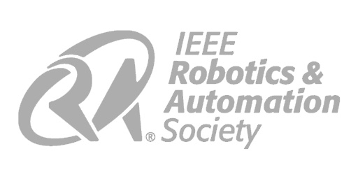

UTSA IEEE RAS

Our Mission is to foster the development and facilitate the exchange of scientific and technological knowledge in Robotics and Automation that benefits members, the profession and humanity.
Projects
Our members work on various robotics projects throughout the semester, including:
- University Rover Challenge (URC)
- Self-driving rover design
- Machine learning for robotics
- Robotic arm manipulation
- Long-range drone design
- Automated soil laboratory testing
- Frequent workshops
Officers
Meet our dedicated team of executive officers who help organize and run our society:
- President: Alejandro P
- Vice President (External): Dani B
- Vice President (Internal): Ben H
- Secretary: Miguel S
- Treasurer: Roberto N
Calendar
URC team meets every Friday @ 11:30AM in AET 1.202
📅 Google Calendar
Upcoming events:
- First General Meeting of Spring 2025 @ 4pm on Monday 2025-02-03 in HSU 1.202
- Project Workshops
- Weekly URC Sub-team Meetings
- Science Mission: Tuesdays @ 6pm in AET 1.202
Wiki
We share our how-to guides, code, and documentation on our GitHub: UTSARobotics
Get in touch with us: